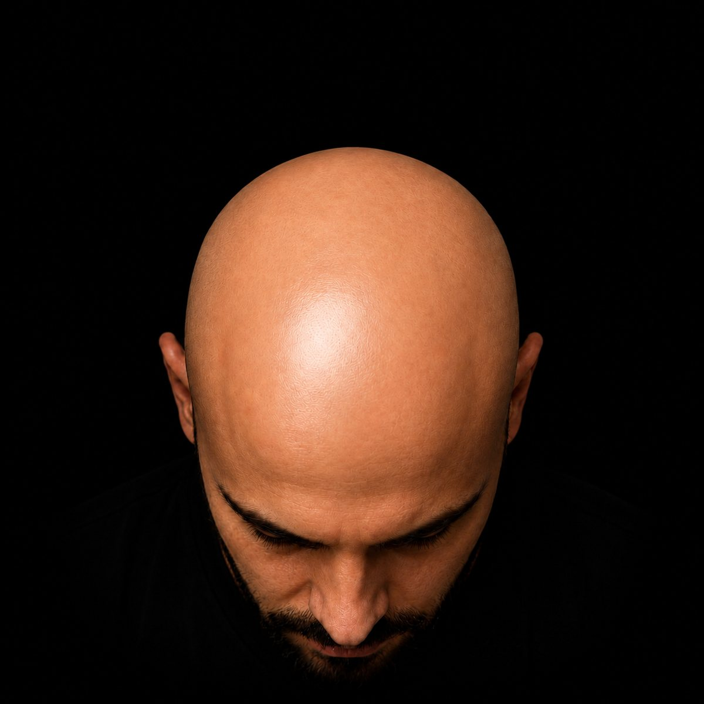
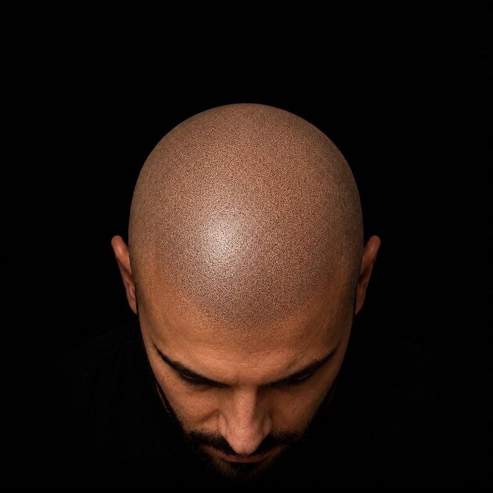
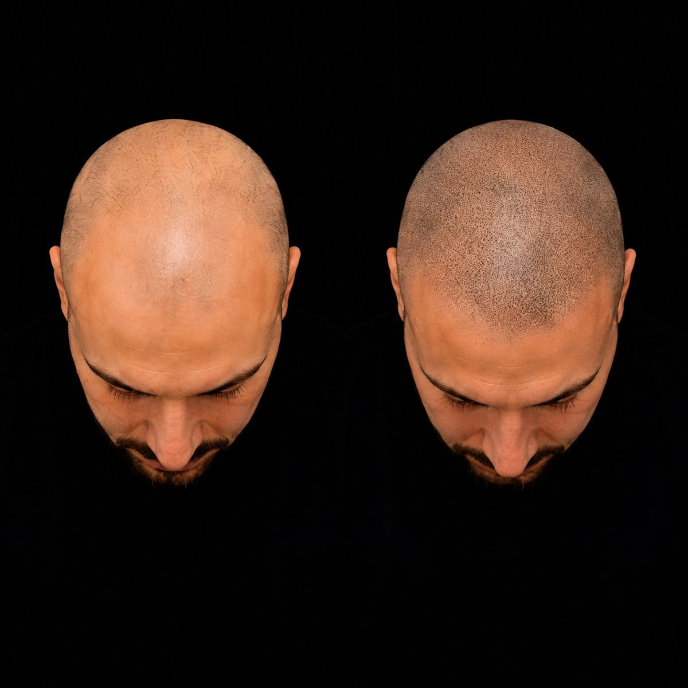
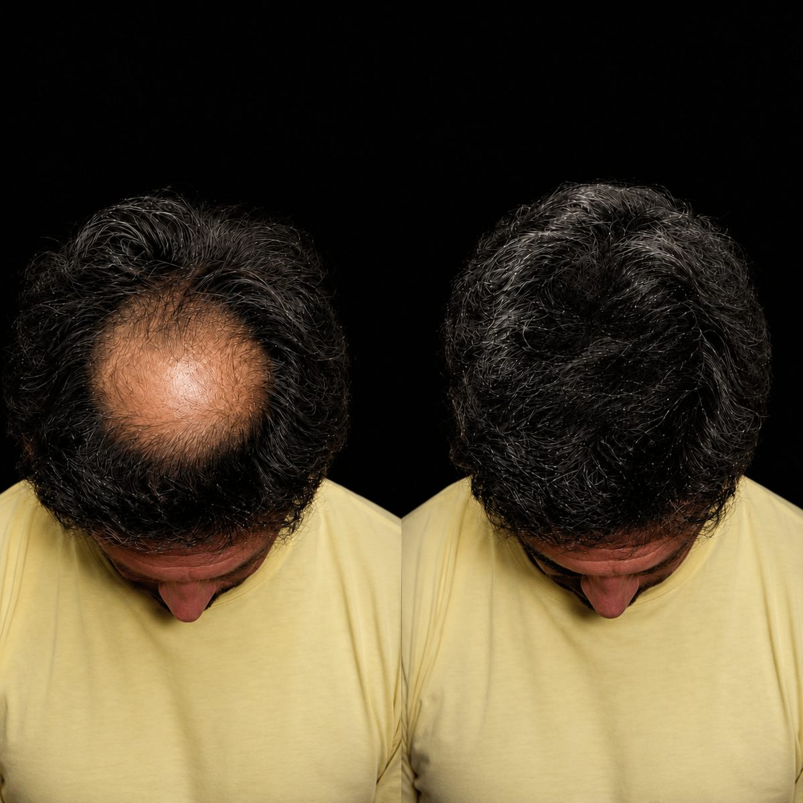
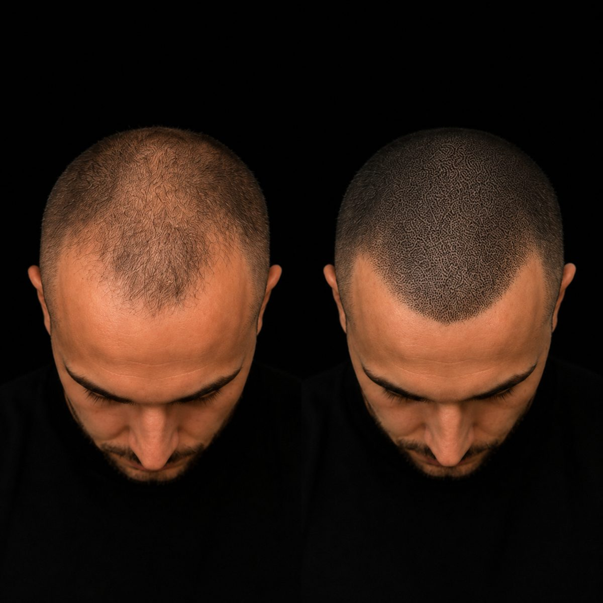
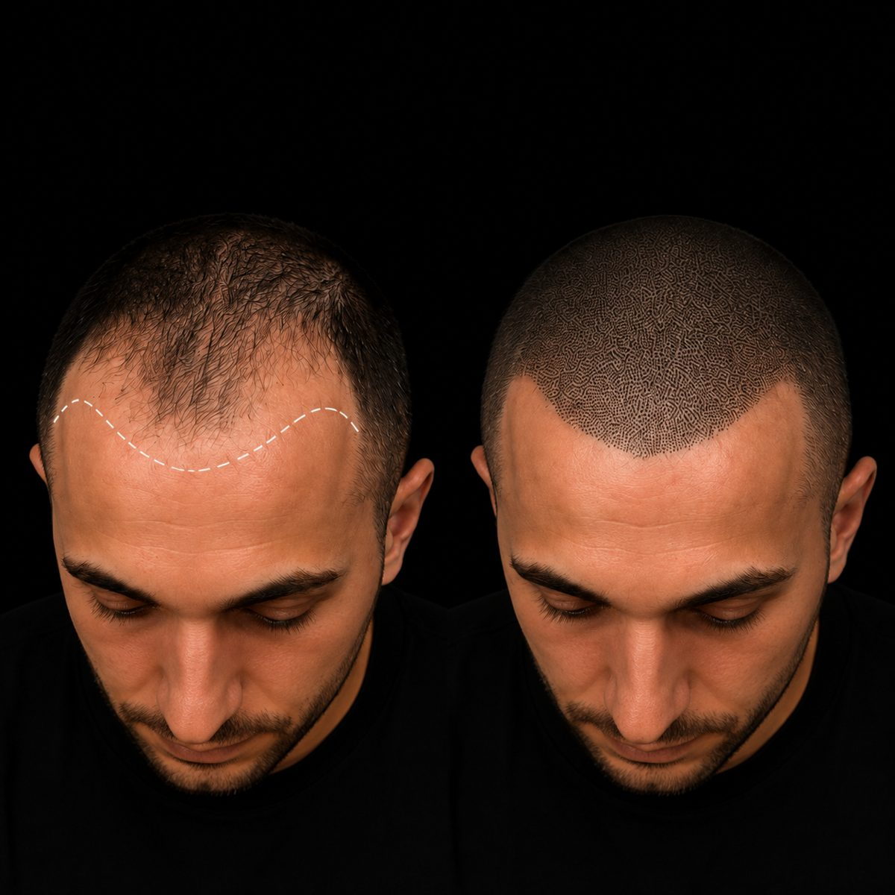
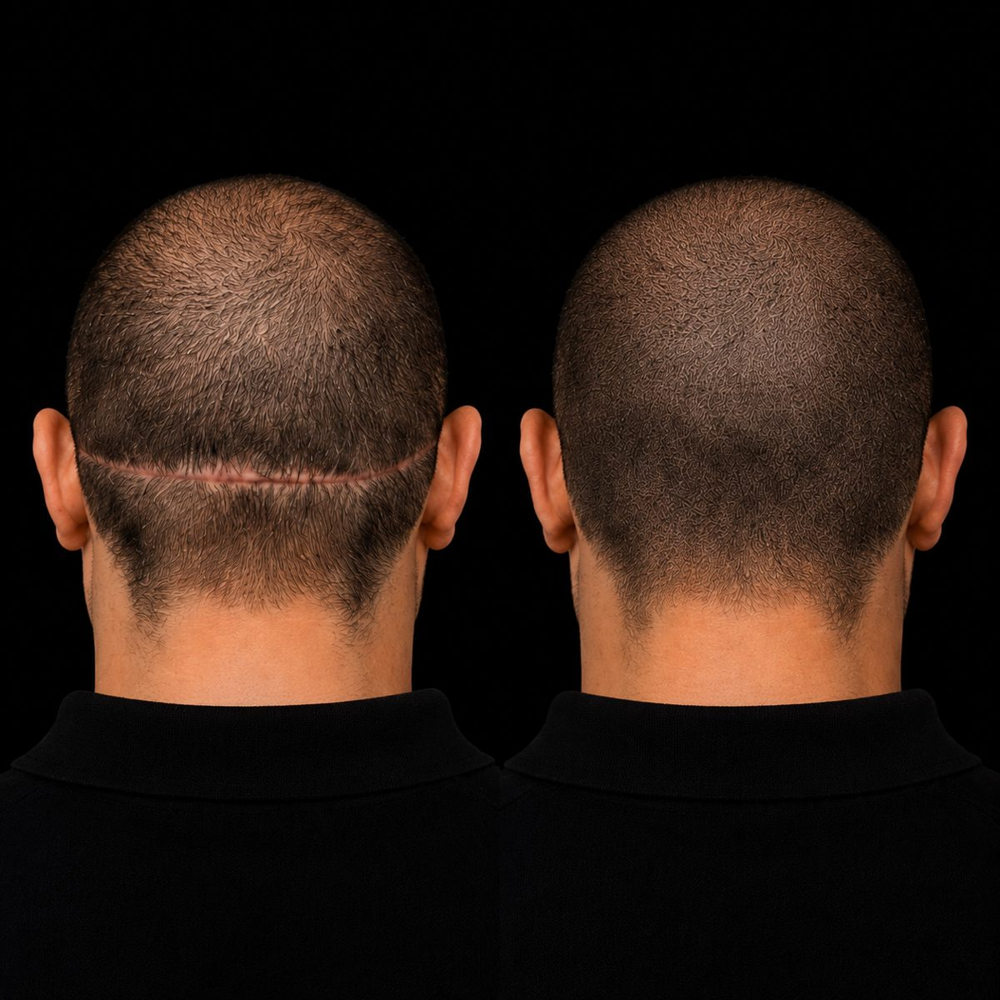
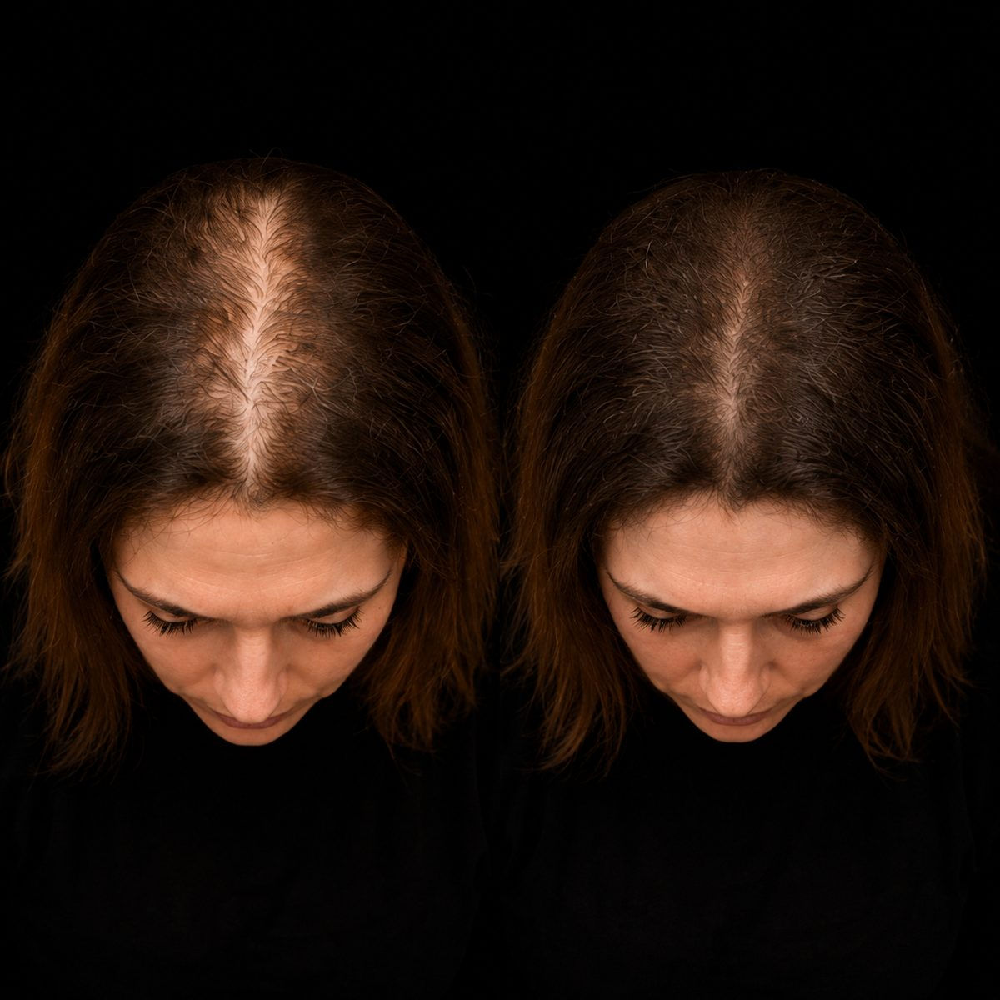
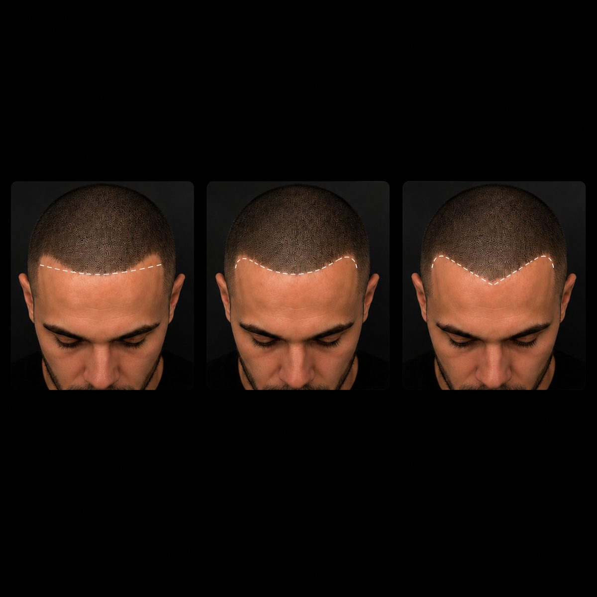
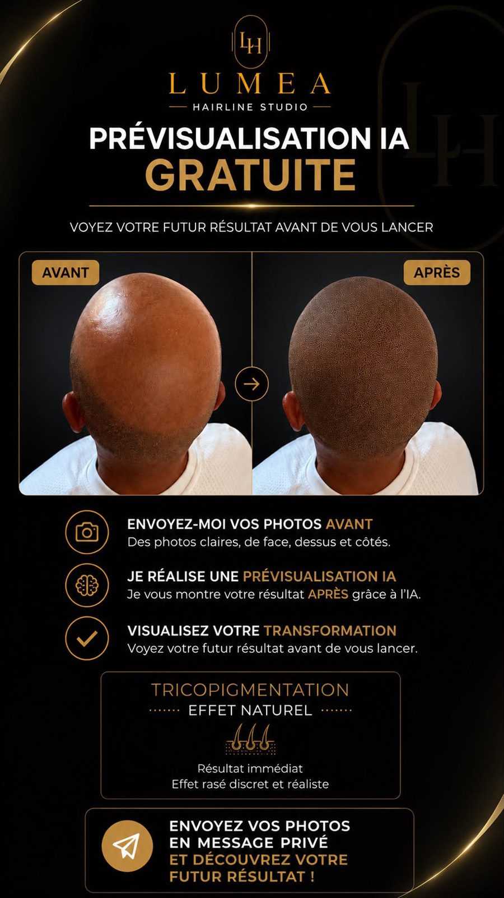

Lumea Hairline Studio · Var
Tricopigmentation micro-point ultra réaliste, homme & femme. Un résultat visible dès la première séance, indétectable de près comme de loin.
Lumea Hairline Studio
Prestations
Recrée l'apparence d'une chevelure rasée par micro-points pigmentés sur l'ensemble du cuir chevelu. Effet rasé 0, sans reflet.
Demander un diagnosticComble visuellement les zones clairsemées comme le golf ou le vertex avec des micro-points pigmentés. Résultat discret et naturel.
Demander un diagnosticCamoufle les cicatrices laissées par des greffes. Les micro-pigments s'adaptent à votre carnation pour rendre la cicatrice invisible à l'œil nu.
Demander un diagnosticChute diffuse liée au stress, à une carence ou un changement hormonal : la tricopigmentation densifie visuellement la chevelure et redonne confiance.
Demander un diagnosticEn séance
Résultats


Avant AprèsFaites glisser pour comparer — chaque résultat est réalisé en micro-point, point par point.
Résultats







Pourquoi Lumea
Chaque follicule est reproduit à la main, un point à la fois. Aucune séance ne ressemble à une autre.
Notre obsession : que personne ne devine. Ni votre coiffeur, ni votre entourage.
Vous êtes reçu(e) seul(e), en toute confidentialité, dans le Var.
Avant, pendant, après : vous avez une réponse sous 24h par message privé.
Comment ça se passe
Vous envoyez vos photos par message privé. Nous étudions votre zone, votre carnation et vous proposons un plan précis.
Chaque micro-point est déposé un à un pour reproduire un follicule naturel. Teinte sur mesure, ligne frontale dessinée avec vous.
Effet visible dès la première séance. De 1 à 4 séances selon diagnostic, puis des retouches espacées pour un rendu qui reste naturel dans le temps.
Ils nous font confiance
« Tout est top, rien à dire ! Irma et Sarah sont toutes les deux très accueillantes, sympathiques et très professionnelles ! »
Avis vérifié · Lumea Depil« Un GRAND merci pour la gentillesse et le professionnalisme. Je viens de Paris pour mes prestations. »
Avis vérifié · Lumea Depil« Prestation incroyable ! Un travail fait avec soin et attention. Je recommande cet institut, vous pouvez y aller les yeux fermés ! »
Avis vérifié · Lumea Depil« Véritable travail d'orfèvre. On se sent à l'aise dès l'arrivée. Très professionnel, je recommande à 1000%. »
Avis vérifié · Lumea DepilSuivez nos résultats
Avant / après, coulisses des séances et transformations en vidéo, publiés chaque semaine.

Exclusif
Voyez votre futur résultat avant de vous lancer. Envoyez vos photos (face, dessus, côtés), nous générons votre rendu APRÈS grâce à l'IA.
Avant/après, coulisses des séances, résultats clients : tout est sur le compte Instagram du studio.
@lumea.hairline.studioOffre de lancement
Envoyez simplement 2 ou 3 photos de votre zone par message privé. Vous recevez un plan personnalisé : technique adaptée, nombre de séances et tarif exact — avant de décider quoi que ce soit.
Sans engagement · Privé & confidentiel · Réponse sous 24h
Diagnostic gratuit